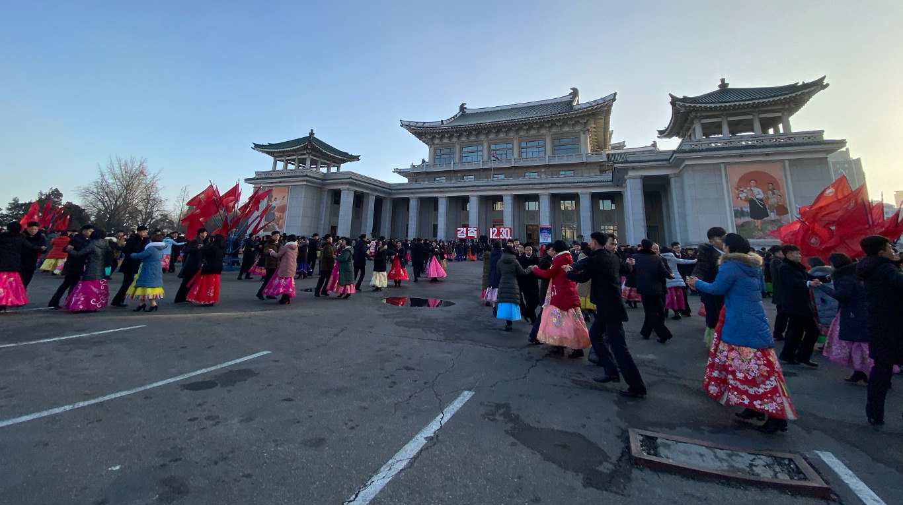
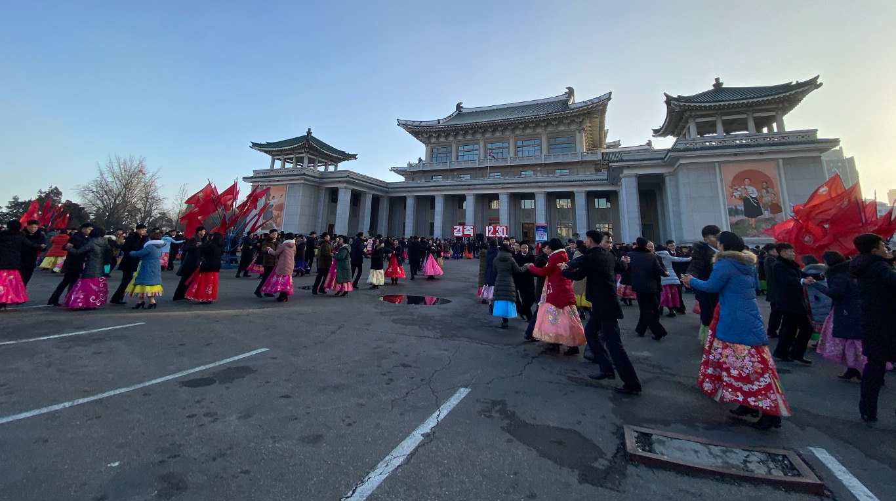
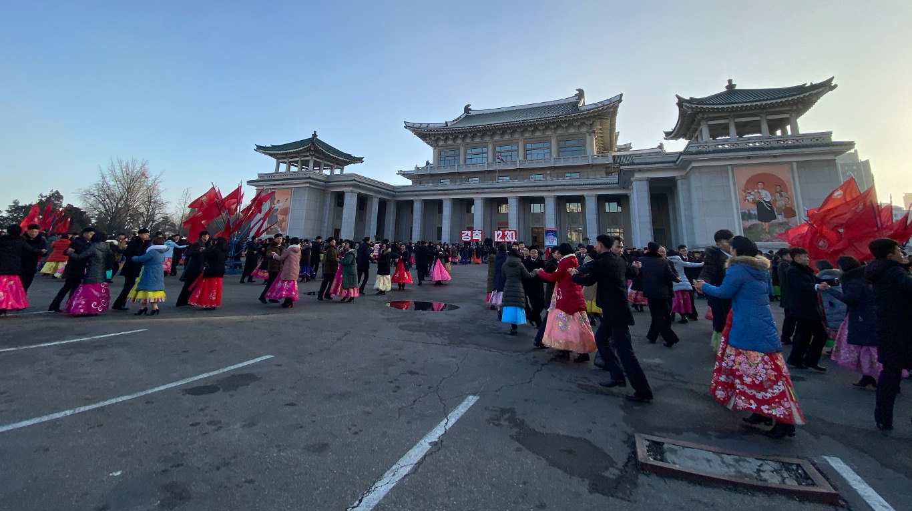

Capitale de la Corée du Nord depuis son indépendance le 9 Septembre 1948, Pyongyang est devenue, depuis ces dernières années, l'étendard d'une Corée du Nord qui se modernise.
En centre-ville, on retrouve des monuments à la gloire du régime, comme les célèbres statures du grand-père et du père de l'actuel dirgeant du pays, Kim Jong-Un : Kim Il-Sung et Kim Jong-Il. Bien que l'on pourrait croire que dans un tel pays, les monuments architecturaux ne soient que secondaires, bien au contraire, ils servent la forte propagande du régime. La tour du Juche, le palais du Soleil Kumsusan, l'arc de triomphe de Kim Il-sung, l'arche de la Réunification et la tombe de Jumong contribuent au maintien d’une propagande constante sur la population. Le radioréveil commun et les haut-parleurs diffusant les messages de propagande contribuent également à une propagande bien ficelée, sans pour autant être des monuments touristiques.
Aujourd’hui, Pyongyang se développe de plus en plus avec ses quartiers d’habitation moderne, offert par l’Etat au citoyen. Mais, bien que cela puisse paraitre comme un acte généreux de la part du gouvernement nord-coréen, cela cache la réalité de l’extérieur de Pyongyang, bien différent et largement sous développé par rapport à la capitale. Il est également important de préciser que seuls les populations les plus proches du régime et considérées comme respectant le régime peuvent espérer vivre dans la capitale nord-coréenne. Ainsi, Pyongyang n’est qu’un panneau géant pour les touristes et la population considérée comme modèle par le régime, afin d’éviter de mettre en avant la misère des campagnes. Au final, cette ville qui tente de montrer qu’elle peut rivaliser avec son opposée sud-coréenne Séoul, ne fait que nous rappeler que les inégalités politiques et économiques persistant entre les deux pays.
